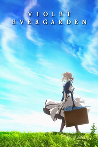

🎀 Violet Evergarden 🎀
“Búp Bê Ký Ức: Violet Evergarden”
là một ngoại truyện đầy cảm xúc
của series anime đình đám Violet Evergarden.
Đặc biệt, Búp Bê Ký Ức đánh dấu sự trở lại đầy
ý nghĩa của hãng phim sau biến cố hỏa hoạn
đau thương, làm tăng thêm giá trị nhân văn cho tác phẩm.
